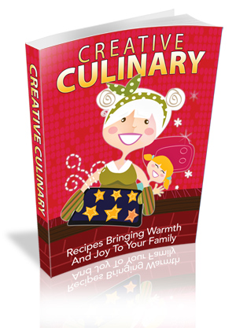

Dear Entrepreneur...
“ Learning About
Creative Culinary Can Have Amazing Benefits For Your
Life And Success!”
Recipes Bringing Warmth And Joy To Your Family! From the Desktop of <Your Name>, Dear Friend, Just about every family has a prized recipe, beloved
as much for the memories it evokes of family get-togethers or a
particular family member, as it is for its taste. Many families have
many such recipes, handed down through generations, taught to
youngsters, or stashed on index cards or scraps of paper. Many people have never
heard if this and have no idea how to go about figuring out where they
are or how to change it.
The truth is: If You Want To Improve Your Overall Life And Your Creativity In The Kitchen...You Need To Have A Look At Creative Culinary! You know why most people have a tendency to not
achieve the success they desire in their kitchen skills and overall
life? It's because they don't know that there are ways to truly be
creative in the kitchen that gets the whole family involved and
creates fun and stories to pass on to future generations. Which brings us to a very important aspect I must talk about here: You Can Have More Fun Un The Kitchen And Life If You Discover Creative Culinary! People who struggle in coming up with creative ideas in the kitchen will find these things in common:
Well don't worry… With the strategies that I’m about to let you in on , you will have no problems when it comes to learning the truth behind being truly creative in the kitchen! Introducing… “Creative
Culinary” Recipes Bringing Warmth And Joy To Your Family! 
In this book, you will learn all about:
Make Full Use Of This Knowledge And Get A Real Look At Creative Culinary! Let’s face it…The kitchen is the essence of any home, and as such it's the perfect place for attaining family memories. When you spend time baking, cooking and savoring meals with your family, you produce happy memories that you and your youngsters will cherish forever. That is why is it very important for you to realize the value of what I’m offering. The price I’m charging for this book is minimal when you consider the fact that you can use just one of these strategies to make your money back 10-15 times over. Remember that if you fail to take action today, things will not get better… at least not immediately. So make sure you take action and get a copy of this book right away!
Grab Your Copy For Only… $$$
To Your Success! Warm Regards, P.S. Remember, for this low price, you can immediately make 10-15 times the sum of your investment… so don’t hesitate and grab a copy right away! P.P.S Your situation might not improve tomorrow if you don’t take a plunge. Which is worse? Telling people that you failed to discover the easy ways to be creative in the kitchen or save the embarrassment and take a couple of days/weeks to learn the truth behind making lasting family memories?
Copyright © 2009 YourDomain.com. All Rights Reserved |